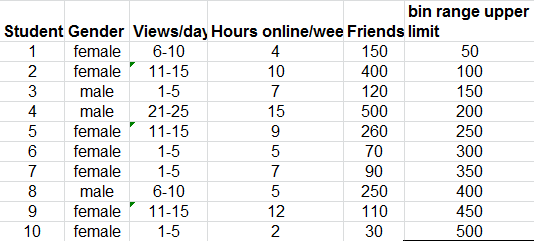
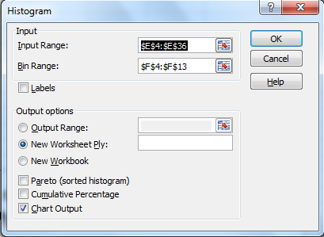
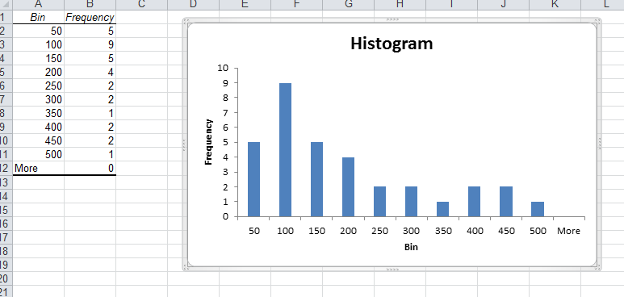

Objectives
This lab will focus on how to effectively summarise data quantitatively and perform some basic analyses for useful managerial information and insight. You will focus on descriptive statistics.
Descriptive Statistics
The Excel file - facebook survey provides data from a sample of students about their Facebook habits. The data includes categorical variables for gender and number of views per day, and numerical variables for the number of hours spent online per week and their estimated number of friends.
We might want to get a "big picture" view of what the data tells us. For example we might want to determine what is the typical number of friends, if any differences exist by gender, or how the number of views per day might be related to the number of friends.
Statistical measures provide an effective and efficient way of obtaining meaningful information from data. Descriptive statistics refers to a collection of quantitative measures and ways of describing data. This includes measures of central tendancy (mean, median, mode, proportion), measures of dispersion (range, variance, standard deviation), and frequency distributions and histograms.
Excel provides statistical functions as well as an analysis toolpak for more complex computations.
Some of the functions include:
- AVERAGE(data range)
- MEDIAN(data range)
- MODE.SNGL(data range)
- MODE.MULT(data range)
- VAR.S(data range)
- VAR.P(data range)
- STDEV.S(data range)
- STDEV.P(data range)
Frequency Distributions, Histograms, and Data Profiles
A frequency distribution is a table that shows the number of observations in each of several nonoverlapping groups. We may construct frequency distributions for both categoricl and numerical data.
Categorical Data
Categorical variables naturally define the groups in a frequency distribution; we need only count the number of ovservations that appear in each category. For the Facebook survey data for example, we may count the number of students who access Facebook 1-5 times, 6-10 times, and so on, using the Excel COUNTIF function.
For instance to count the number of students who view facebook 1-5 times a day, use the function
=COUNTIF($C$4:$C$36,"1-5")A frequency distribution for this categorical variable is shown below.

Write the necessary COUNTIF formulas to present the data as above.
You can then construct a column chart to represent the frequencies.

You can also express the freqencies as a fration or proportion of the total; this is called a relative frequency distribution as below:

Thus the relative frequency of 1-5 views/day is calculated at 9/33=0.273. The sum of the relative frequencies must total 1.0
Descriptive Statistics cont'd
Numerical Data
For numerical data that consist of a small number of discrete values, we may construct a frequency distribution similar to the way it was done for categorical data, that is simply count the frequencies of each discrete value. For example, in the facebook data, all the numbers of hours online/week are whole numbers between 2 and 15.
Construct a frequency table for the hours online per week using the COUNTIF function as before.

Create a column chart for the frequency values.

A graphical depiction of a frequency distribution for numerical data in the form of a column chart is called a histogram. Frequency distributions and histograms can be created using the analysis toolpak in Excel.You should have the analysis toolpak loaded into Excel. To check, go to the File tab in Excel, choose Options, and then Add-Ins, in the Manage box select Excel Add-Ins, Click Go. In the Add-Ins available box select Analysis Toolpak check box and click OK.
For numerical data that have many different discrete values with little repetition or are continuous, a frequeny distribution requires that we define groups (called bins), by specifying the number of groups, the width of each group, and the upper and lower limits of each group. It is important to remember that the groups may not overlap so that each value is counted in exacltly one group.
Add a column to the Facebook data that contains the bin ranges for Friends. Using these values, we are placing each value of Friends into groups from 0 to 50, more than 50 and up to 100, more than 100 up to 150 and so on.

Next click on the Data tab in Excel you should see the Data Analysis button.

Choose Histogram, select the range of values to be used, in this case it is the values in the Friends column (E4:E36). Choose the Bin values to be the new values you entered for the bin ranges (F4:F13). Make sure you check the Chart output box.

A histogram with bin range and frequency values will be generated in a new sheet.

The histogram shows that we have 5 occurences with below or equal to 50 friends, nine greater than 50 and less than or equal to 100 and so on. The histogram shows that fewer students have large numbers of friends and that most have 200 or less.
As previously done we can add a relative frequency column so as to add more context to the values you are analysing.

We can also sum all the relative frequencies at or below each upper limit, this is called the cumulative relative frequency. The cumulative relative frequency represents the proportion of the total sample that falls at or below the upper limit value.For example we can see that 0.697 or 70% of students have 200 or less friends on facebook.

Note that as relative frequenies must be between 0 and 1 and must add up to 1, the cumulative relative frequency for the last group must be equal to 1.
Next you can create a chart for the cumulative relative frequency, called an ogive. From this chart you can easily estimate the proportion of observations that falls below a certain value.

Exercise:
Construct frequency distributions and histograms for the numerical data in the excel file cell-phone.xls. Also, compute the relative frequencies and cumulative relative frequencies. Plot the cumulative relative frequenices on a line chart.
Data Profiles
Data are often expressed as percentiles and quartiles. You are no doubt familiar with percentiles from standardised tests such as those used for college enterance exams. Percentiles specify the percentage of other test takers who scored at or below the score of a particular individual.
Generally the kth percentile is a value at or below which at least k percent of the observations lie. There is not a standardised method for calculating the kth percentile. However the most common is as follows:
First order the N data values from smallest to largest and calculate the rank of the kth percentile using the following formula:
Nk/100 + 0.5
rounded to the nearest integerThen you take the value corresponding to that rank as the kth percentile.
For example, using the Facebook data, the rank of the 90th percentile would be computed as:
33(90)/100 + 0.5 = 30.2
rounded to nearest integer is 30The 30th rank is 400, so 90 percent of students have 400 or less friends.
Excel does have another method of calculating this using the PERCENTILE function but the values calculated can vary from the usual method.
percentile.inc(e4:e36,0.9) = 396
this gives the 90th percentile as 396 or rounded to 400.Quartiles represent the 25th percentile (called the first quartile, Q1), 50th percentile (second quartile, Q2), 75th percentile (third quartile, Q3), and the 100th percentile (fourth quartile, Q4). One-forth of the data is below the first quartile, and two-forths of the data are below the second quartile.
For example in the facebook data,
quartile.inc(e4:e36,1) = 80 = Q1 This means 25% of the data falls below 80 Friends.
quartile.inc(e4:e36,3) = 250 = Q3 This means 75% of the data falls below 250 Friends.
We can extend these ideas to other divisions of the data. For example, deciles divide the data into 10 sets: the 10th percentile, 20th percentile, and so on. If you want the 10th percentile then you can use the percentile.inc formula with 0.1 in the formula.
All these types of measures are called data profiles or fractiles.
(the same information can be seen in your cumulative relative frequency column)
Exercises
A community health status survey obtained the following demographic information from the respondents:

Compute the relative frequency and cumulatvie relative frequency of the age groups.

The Excel file MBA Student Survey provides demographic data and and responses to questions on the number of nights out per week and study hours per week for a group of MBA students. Construct frequency distributions and compute the relative frequencies for the categorical variables of gender, international students status, and undergraduate concentration. What conclusions can you draw?
Construct a fequency distribution and histogram for driving acuracy(%) in the Excel file GolfingStatistics using the Excel Histogram tool and appropriate bin ranges. find the relative frequencies and cumulative relative frequencies for each bin.
When the Histogram is created in the sepearate sheet, add a relative frequency and cumulative frequency column as stated above. Add another series by right clicking on the histogram, and choosing Select Data. Click Add, name the series cumulative, choose the cumulative column of data you constructed. Next change the series from a bar to a line on the chart. Do this by right clicking on the cumulative series and choose Change Series Chart Type, choose Line. Next right click the series and choose Format Data Series, Change the axes to a secondary Axes.
Your chart and data should look like this: